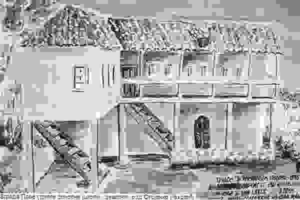

Прва српска школа у Бијелом Пољу
Отварање прве српске основне школе у Бијелом Пољу 1845. године представља кључну прекретницу у образовној историји овог града и ширег Полимља. У времену када је град имао развијену трговачку традицију, школа је постала симбол културног и духовног уздизања народа кроз писменост и знање.
Оснивање школе и дозвола Порте
Прву школу иницирала је црквена општина православне заједнице — на њен захтјев Порта (османске власти) издала је одобрење за рад. Школа је била смјештена у објекту поред манастира или црквених просторија у српском дијелу вароши, што је било уобичајено за тадашње просвјетне покушаје да се очува језик и идентитет.
Први учитељ и наставници
Према расположивим изворима, први учитељ у овој школи био је Илија Спасојевић. Он се спомиње као један од првих просвјетних радника, иако се тачан запис о његовом мандату и биографским детаљима не чува у великој мјери. Сматра се да је управо он организовао прву наставу, која је била усмјерена на основе писмености — читање, писање и рачун, уз снажан нагласак на језик и културу српског народа.
Настава је у почетку била нестална — неријетко под утицајем политичких и административних препрека, па су се наставни циклуси прекидали. Ипак, школа није могла бити затворена, јер је била основана на основу царског фермана (одлуке османских власти), што јој је давало правни статус и заштиту.
Наставни план и уџбеници
Прва школска година била је веома скромна у материјалним ресурсима. Уџбеници као што су буквари (првопричници) и читанке нису били лако доступни, па се најчешће користило оно што су просвјетне власти или учитељи добили из Босне и Херцеговине или других дијелова јужнословенског простора. Програм који се примјењивао у Бијелом Пољу био је сличан оном који је важио у школама у Босни и Херцеговини, што значи да су уџбеници и приступи настави били најбоље од тадашњих савремених српских образовних модела.
Учитељи су често долазили из других крајева — прије свега из Босне и Херцеговине — јер у самом Полимљу није било довољно квалификованих наставника. Такав однос сјећања потврђује да је образовање у почетку било регрутовано из региона у којем су просвјетне институције биле дуже развијене.
У том периоду уџбеници су обично били руком или мастилом штампани буквари и читанке које су пратили основна слова и текстови за читање, често садржавајући и вјерске текстове или прилагођене вјежбе језика. Иако за ову школу специфични наслови буквара и читанке нису сачувани у лакодоступним изворима, веома је вјероватно да су кориштени они који су већ циркулисали у православним школама Санџака и Босне средином XIX вијека — што је била пракса све до организованог штампања уџбеника у Црној Гори.
Улога школе у заједници
У најранијим годинама рада, школа није била само мјесто за поучавање основним вјештинама. Она је била културни центар и срце духовног живота заједнице, гдје су дјеца учила не само писменост, него и идентитет свог народа, његове обичаје и вриједности. Упркос османској управи и периодичним тешкоћама, школа је опстајала као институција коју су мјештани сматрали кључном за опстанак своје заједнице.
Покретање прве српске школе у Бијелом Пољу 1845. године представља историјски чин који је поставио темеље писмености и просвјете у овом крају. Кроз рад учитеља попут Илије Спасојевића и употребу буквара и читанки који су допремани из других културних средина, школа је постала стуб развоја локалне заједнице. Иако су материјални ресурси били ограничени, жеља за знањем и очувањем језика и традиције учинила је ову институцију незаобилазном у даљем развоју образовања у Полимљу.
Први учитељ и почетне учитељске генерације
Према сачуваним подацима, први учитељ који је предавао у овој школи био је Илија Спасојевић. Његово име се помиње у контексту организације првих часова и наставе која је била усмјерена на читање, писање, рачун и вјеронауку — основе које су тада представљале срж школског програма. Спасојевићево дјеловање било је кључно јер је успоставило метод наставе и ученички ритам који су се одржавали и у наредним годинама.
У каснијем периоду, након Спасојевића, школа је добила нове учитеље, често регрутоване из околних крајева гдје су образовне традиције биле већ развијеније, попут Босне и Херцеговине. Наставници који су долазили из ових средина доносили су са собом уџбенике и образовне праксе које су утицале на наставне методе у Бијелом Пољу. Овај прилив учитеља из региона такође је значио да се у школи прате програми и планови слични оним у школама јужнословенских средина.
Један од учитеља који се помиње за крај XIX вијека је Милан Канџић, познат као учитељ који је предавао 1890. године. Он је био ученик Карловачке богословије, образовне установе са значајном традицијом, а у тој школској години учествовао је у раду са ученицима српске основне школе у Бијелом Пољу.
Статистика ученика кроз деценије
Иако за најраније деценије нема потпуне дневничке евиденције о броју уписаних ученика, постоје конкретни подаци из периода краја XIX вијека који свједоче о развоју школе. У школској 1890-тој години четвороразредну основну школу у Бијелом Пољу похађало је 60 ђака, међу којима је било 17 ученица. Ова бројка јасно показује да је до краја XIX вијека школа већ успоставила стабилан број полазника и да је међу дјецом било значајан број дјевојчица што одражава ширење идеје образовања и међу женском популацијом.
Поред поменутих података, из историјских сазнања о образовању у региону зна се и да је након ослобођења од Османског царства и кроз прве деценије XX вијека настава у Бијелом Пољу све више урбанизована и структурирана. Отварањем нових школских објеката и ширењем наставног кадра, број ученика се постепено повећавао, што је био тренд и у другим дјеловима црногорског школства у то вријеме.
Улога школе у друштвеном и културном животу
Школа није била само мјесто образовања; она је кроз своје наставнике и ученике постала културно средиште заједнице. Османска власт је, и поред повремених прекида, одржавала дозволу за рад школе јер се сматрало да она доприноси стабилности и писмености локалног становништва, али и већој уредности у друштву.
Учитељи који су радили у Бијелом Пољу често су били културни и друштвени организатори — осим поучавања дјеце они су се бавили и подучавањем одраслих, тумачењем вјерских текстова и очувањем језика и традиције. Њихов рад имао је утицај и на формирање других образовних и друштвених институција у граду током касног XIX и раног XX вијека.
Праћење наставничких генерација и статистике ученика прве српске школе у Бијелом Пољу показује процес постепеног развоја образовања у овом граду, од једноставне црквене учионице и учитеља Спасојевића, до институционализованог школства пред крај XIX вијека. Бројке из 1890. године — 60 ђака, укључујући 17 ученица — свједоче о томе да је школа постала мјесто гдје су се генерације дјеце припремале за живот у времену великих друштвених и политичких промјена.
